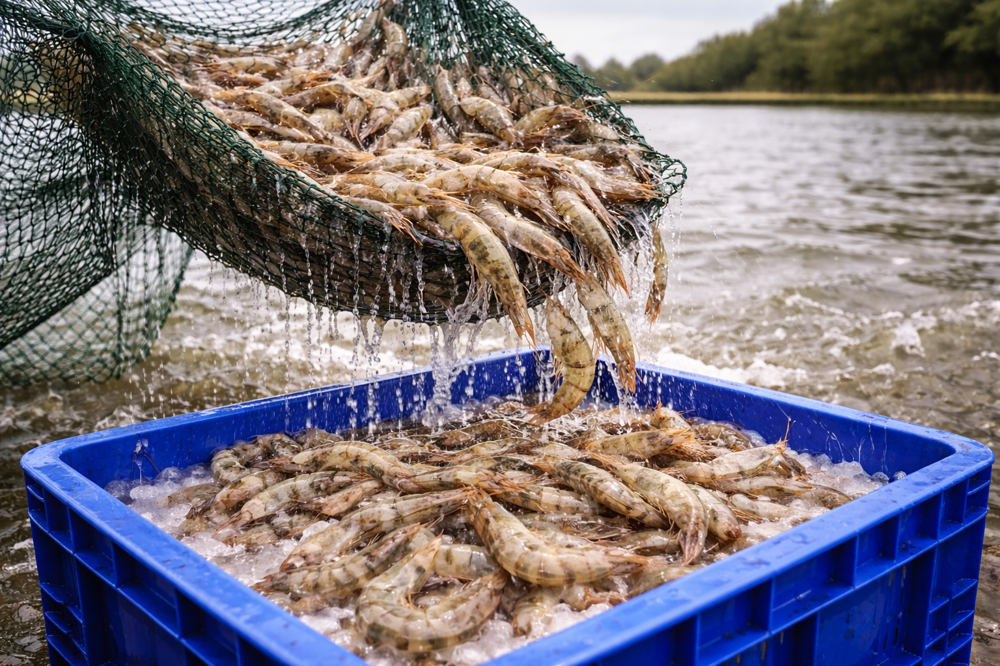
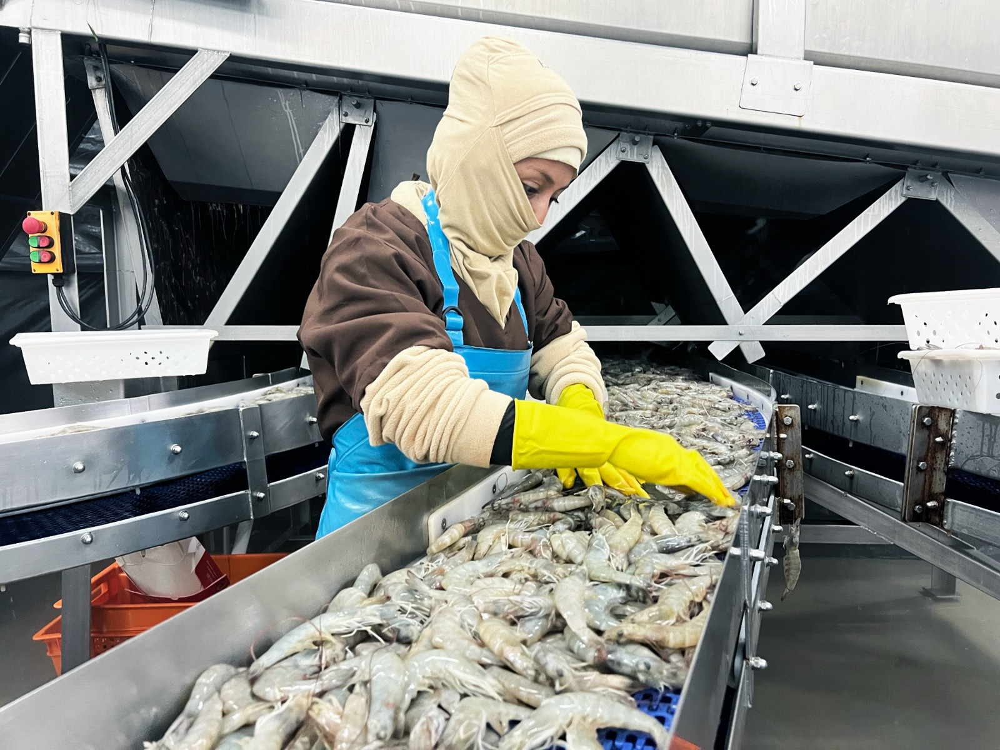
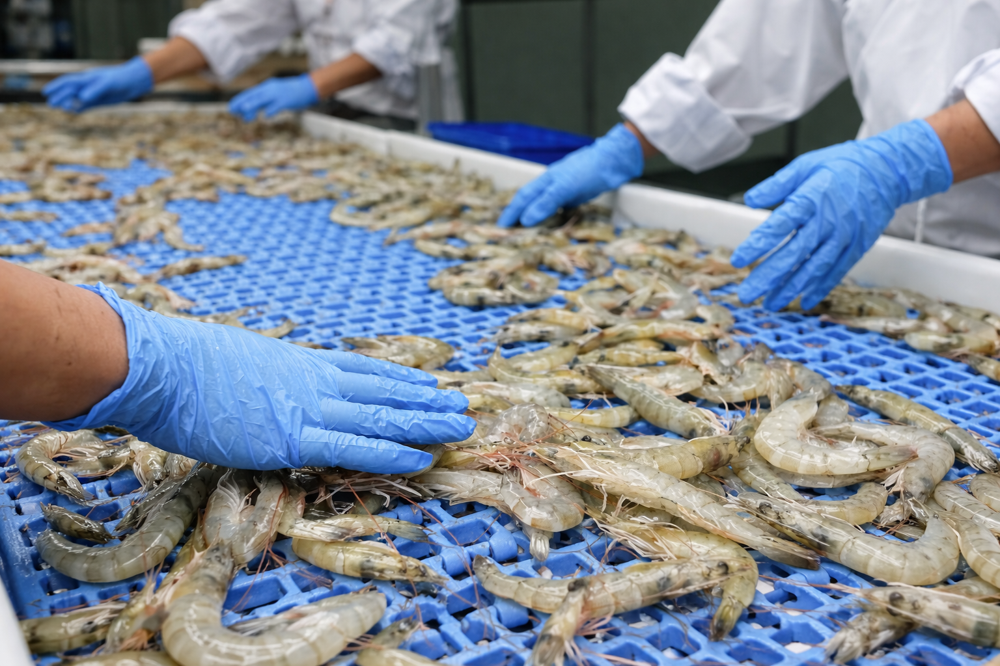
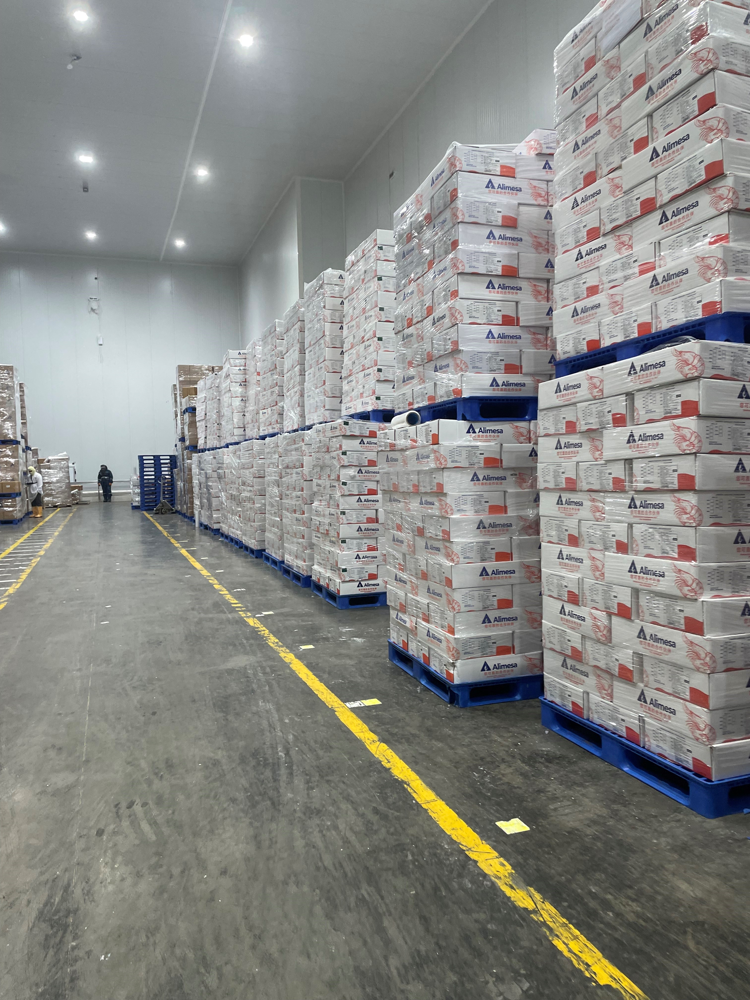

The shrimp processing process involves several key stages to ensure product quality and food safety. Once harvested, shrimp are quickly transported to processing facilities where they are sorted by size and quality. They are then cleaned, deheaded (if necessary), peeled, and deveined based on the desired final product. Depending on the customer’s specifications, shrimp may be left whole, tail-on, or further processed into value-added formats. The processed shrimp are then weighed, packed, and frozen—usually using IQF (Individually Quick Frozen) or block freezing methods. Strict hygiene, temperature control, and quality assurance protocols are followed throughout to maintain freshness and meet international food safety standards.

Our team verifies and oversees the shrimp harvesting process.

We receive and ensure that the raw material arrives in excellent condition.

Our specialists select the finest raw materials.

We use high-tech machinery to classify the product by size.

The product is stored in cold storage at the optimal temperature to preserve freshness.

We load the product maintaining the cold chain to ensure it reaches its destination in perfect condition.
We place a strong emphasis on quality through continuous innovation, embracing advanced technologies to deliver premium products.